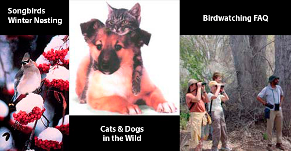

A Site for Nature Seekers
To explore, protect and enjoy wild places on the earth; to practice and promote the responsible use of the earth's ecosystems and resources; to educate and enlist humanity to protect and restore the quality of natural and human environment.